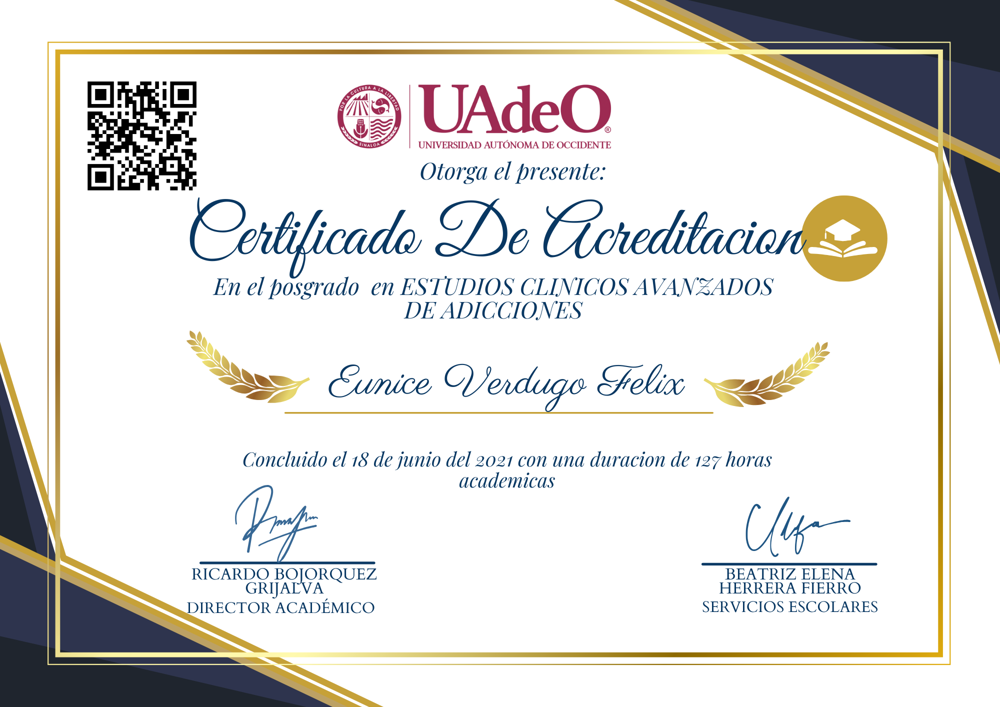

Eunice Verdugo Felix
Por medio del presente se certifica que ha concluido de manera satisfactoria el
Posgrado en Estudios Clínicos Avanzados de Adicciones
Concedido por la
Universidad Semann de Jalisco
En reconocimiento a su dedicación y esfuerzo por completar este importante programa, se extiende este diploma con el aval académico de la Universidad.
____________________________
Ricardo Bojorquez Grijalva
Director Académico